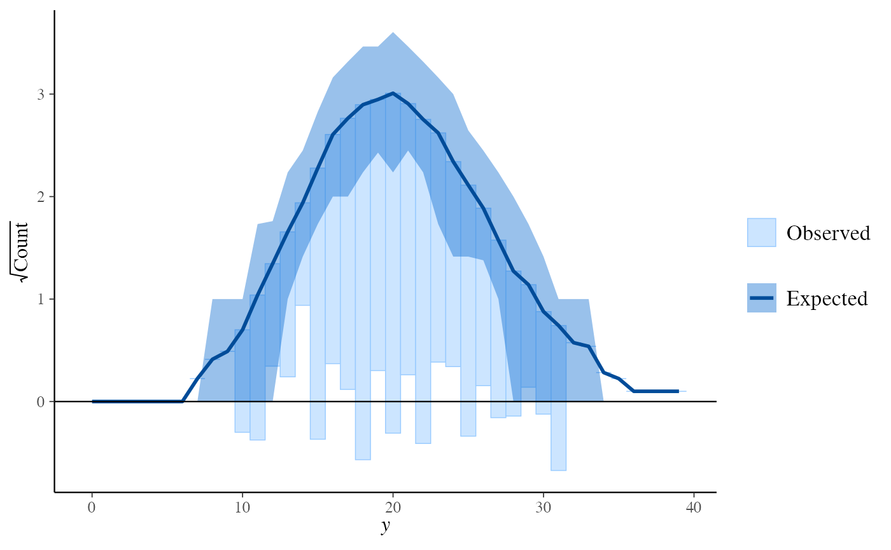

Many of the PPC functions in bayesplot can
be used with discrete data. The small subset of these functions that can
only be used if y and yrep are discrete are documented
on this page. Currently these include rootograms for count outcomes and bar
plots for ordinal, categorical, and multinomial outcomes. See the
Plot Descriptions section below.
ppc_bars( y, yrep, ..., prob = 0.9, width = 0.9, size = 1, fatten = 2.5, freq = TRUE ) ppc_bars_grouped( y, yrep, group, ..., facet_args = list(), prob = 0.9, width = 0.9, size = 1, fatten = 2.5, freq = TRUE ) ppc_rootogram( y, yrep, style = c("standing", "hanging", "suspended"), ..., prob = 0.9, size = 1 ) ppc_bars_data(y, yrep, group = NULL, prob = 0.9, freq = TRUE)
Arguments
| y | A vector of observations. See Details. |
|---|---|
| yrep | An |
| ... | Currently unused. |
| prob | A value between |
| width | For bar plots only, passed to |
| size, fatten | For bar plots, |
| freq | For bar plots only, if |
| group | A grouping variable of the same length as |
| facet_args | An optional list of arguments (other than |
| style | For |
Value
The plotting functions return a ggplot object that can be further
customized using the ggplot2 package. The functions with suffix
_data() return the data that would have been drawn by the plotting
function.
Details
For all of these plots y and yrep must be integers, although
they need not be integers in the strict sense of R's
integer type. For rootogram plots y and yrep must also
be non-negative.
Plot Descriptions
ppc_bars()Bar plot of
ywithyrepmedians and uncertainty intervals superimposed on the bars.ppc_bars_grouped()Same as
ppc_bars()but a separate plot (facet) is generated for each level of a grouping variable.ppc_rootogram()Rootograms allow for diagnosing problems in count data models such as overdispersion or excess zeros. They consist of a histogram of
ywith the expected counts based onyrepoverlaid as a line along with uncertainty intervals. The y-axis represents the square roots of the counts to approximately adjust for scale differences and thus ease comparison between observed and expected counts. Using thestyleargument, the histogram style can be adjusted to focus on different aspects of the data:Standing: basic histogram of observed counts with curve showing expected counts.
Hanging: observed counts counts hanging from the curve representing expected counts.
Suspended: histogram of the differences between expected and observed counts.
References
Kleiber, C. and Zeileis, A. (2016). Visualizing count data regressions using rootograms. The American Statistician. 70(3): 296--303. https://arxiv.org/abs/1605.01311.
See also
Other PPCs:
PPC-censoring,
PPC-distributions,
PPC-errors,
PPC-intervals,
PPC-loo,
PPC-overview,
PPC-scatterplots,
PPC-test-statistics
Examples
set.seed(9222017) # bar plots f <- function(N) { sample(1:4, size = N, replace = TRUE, prob = c(0.25, 0.4, 0.1, 0.25)) } y <- f(100) yrep <- t(replicate(500, f(100))) dim(yrep)#> [1] 500 100group <- gl(2, 50, length = 100, labels = c("GroupA", "GroupB")) color_scheme_set("mix-pink-blue") ppc_bars(y, yrep)# split by group, change interval width, and display proportion # instead of count on y-axis color_scheme_set("mix-blue-pink") ppc_bars_grouped(y, yrep, group, prob = 0.5, freq = FALSE)# \dontrun{ # example for ordinal regression using rstanarm library(rstanarm) fit <- stan_polr( tobgp ~ agegp, data = esoph, method = "probit", prior = R2(0.2, "mean"), init_r = 0.1, seed = 12345, # cores = 4, refresh = 0 ) # coded as character, so convert to integer yrep_char <- posterior_predict(fit) print(yrep_char[1, 1:4])#> 1 2 3 4 #> "0-9g/day" "0-9g/day" "10-19" "10-19"yrep_int <- sapply(data.frame(yrep_char, stringsAsFactors = TRUE), as.integer) y_int <- as.integer(esoph$tobgp) ppc_bars(y_int, yrep_int)ppc_bars_grouped( y = y_int, yrep = yrep_int, group = esoph$agegp, freq=FALSE, prob = 0.5, fatten = 1, size = 1.5 )# } # rootograms for counts y <- rpois(100, 20) yrep <- matrix(rpois(10000, 20), ncol = 100) color_scheme_set("brightblue") ppc_rootogram(y, yrep)ppc_rootogram(y, yrep, prob = 0)ppc_rootogram(y, yrep, style = "hanging", prob = 0.8)ppc_rootogram(y, yrep, style = "suspended")